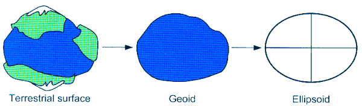
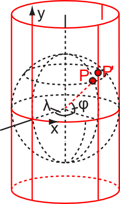

· Описание функционала программы
1. Поддерживаемые форматы:
1.1. Треки OziExplorer *.plt"
1.2. Маршрут OziExplorer *.rt2"
1.3. Путевые точки OziExplorer *.wpt"
1.4. Файл координат *.crd"
1.5. Файл Google Earth *.kml"
1.6. Файл GPS координат *.gpx"
1.7. Файл нескольких маршрутов OziExplorer *.rte"
1.8. Архивированный файл Google Earth *.kmz
1.9. Файл MicrosoftExcel с разделителями запятыми *.csv
1.10. Файл OpenStreetMaps *.osm
1.11. Файл обмена навигационными данными *.nmea
1.12. Текстовый файл *.txt
1.13. Файл адресов *.adrs
1.14. Ссылка сервиса Яндекс.Карты
1.15. Ссылка сервиса Wikimapia
2. Основные возможности:
2.1. Конвертер маршрутов
2.1.1. Загрузка файлов различных форматов. Для этого выберите в меню Файл -> Загрузить -> Файл маршрута. Или просто перетащите файл в окно программы.
2.1.2. Загрузка из ссылок на wikimapia.org и maps.yandex.ru. Для этого выберите в меню Файл -> Загрузить -> Ссылка. Или просто перетащите текст ссылки в окно программы.
2.1.3. Сохранение в различные форматы файлов и ссылки. Для этого выберите в меню Файл -> Сохранить -> Файл маршрута.
2.1.4. Сохранение нескольких маршрутов в один файл (доступно для форматов rte и kml)
2.1.5. Построение профиля высот для нескольких треков, полученных с GPS приемника
2.1.6. Измерение расстояния между точками, нахождение азимута и магнитного склонения. Эти действия доступны в инструменте «Измерение расстояния». В главном меню Инструменты -> Измерение расстояний.
2.1.7. Преобразование различных форматов записи координат точек. В главном меню Инструменты ->Преобразование координат.
2.1.8. Правка файлов маршрутов как отдельных точек. Сохранение в формат путевых точек. В главном меню Инструменты ->Правка путевых точек.
2.1.8.1. Загрузка, редактирование, сохранение точек в разных форматах
2.1.8.2. При открытии файла kml или kmz из окна редактирования путевых точек загрузятся точки, сохранённые как отдельные элементы Placemark. Остальные форматы загружаются полностью с возможностью редактирования каждой точки отдельно.
2.1.9. Сравнение маршрутов. Выделите несколько маршрутов и в контекстном меню выберите пункт «Добавить к сравнению». Будет открыто окно сравнения различных параметров маршрутов. Для более наглядного сравнения в маршруты должны быть загружены высоты.
2.1.10.
Загрузка высот в маршрут. В контекстном
меню маршрута выберите пункт Изменить -> Загрузить высоты. В маршрут
буду загруженных данные о высотах точек. Данные будут загружены из источника,
указанного в настройках Источники данных -> Данные о высоте.
Внимание! При обработке маршрутов с большим количеством точек
обработка может занять длительное время или произойдет превышение лимита
обращений к сервису (если не используется локальная база данных).
2.1.11. Аппроксимация высот. Сглаживание высот полиномом. В контекстном меню выберите Изменить -> Аппроксимировать высоты. Степень полинома указывается в настройках. Чем выше степень, тем точнее будет функция, но слишком высокие степени требуют большое количество времени для вычислений.
2.2. Карта
2.2.1. Передвигать карту можно, зажав левую кнопку мыши. Если идет измерение расстояния, редактирование или создание маршрута, то перемещение карты осуществляется правой кнопкой мыши. Так же перемещение карты доступно на панели навигатора или стрелками клавиатуры.
2.2.2. Приблизить и отдалить можно колесиком мыши, на панели навигатора или боковой панели карты.
2.2.3. На данный момент поддерживаются следующие поставщики карт: Google, OpenStreetMaps, Яндекс. Этот список будет постоянно увеличиваться. Выбрать карту можно в панели инструментов.
2.2.4. Чтобы узнать адрес щелкните на карте правой кнопкой мыши и в появившемся меню выберите пункт «Что здесь?». Появится маркер с адресом. Сервис определения адреса можно изменить в настройках.
2.2.5. Создание маршрута вручную: выберите пункт меню Файл -> Создать -> Маршрут вручную. Появится окно с инструментами. Щелчок левой кнопкой мыши добавляет новую точку к маршруту после выделенной точки. После того, как все точки будут расставлены, нажмите кнопку Сохранить и введите имя маршрута. После этого созданный маршрут будет добавлен в список маршрутов в конвертере. Сохранить маршрут в файл или ссылку можно из окна конвертера.
2.2.6. Автоматическая прокладка маршрута: щелкните правой кнопкой мыши по карте, в появившемся меню выберите пункт Отсюда. Появится маркер начала маршрута. Аналогичным способом укажите конечную точку. Маршрут будет построен между этими точками. Если используется сервис Google для прокладки маршрута, то допустимо не более 2500 запросов в сутки. Для Яндекс число запросов геокодера и маршрутизатора не должно превышать 25000 в сутки.
2.2.7. Добавление путевых точек. При нажатии правой кнопкой мыши на карте будет показано меню. В нем выберите «Добавить точку» и введите информацию. Кнопка «Узнать высоту» загружает высоту из Google по координатам, записанным в соответствующих полях. Кнопка «Найти адрес» ищет координаты адреса, указанного в поле «Название». В описании точки можно использовать теги HTML. Из главного меню карты можно сохранить путевые точки в файл (Сохранить->Путевые точки в файл)
2.2.8.
Построение профиля высот по созданному
маршруту: в меню выберите пункт Инструменты -> Построить профиль
высот по пути. Создайте маршрут и нажмите кнопку Сохранить.
Откроется окно с профилем маршрута. Данные о высоте берутся из источника,
указанного в настройках (Источники данных -> Данные о высоте). При
обработке маршрута будут добавлены промежуточные точки на указанном расстоянии
друг от друга. Это значение можно изменить в настройках (Графики ->
Расстояние между промежуточными точками).
Внимание! При добавлении большого количества промежуточных точек
обработка может занять длительное время или закончиться лимит запросов к
серверу при использовании интернет-сервисов высот.
2.2.9. Из окна карты доступно сохранение всех маршрутов и путевых точек в один файл. Для этого выберите пункт меню Файл -> Сохранить -> Путевые точки и маршрут в файл. Маршруты и точки будут сохранены в формате KML или KMZ. Другие форматы не поддерживают хранение одновременно маршрутов и точек.
2.2.10. Поиск мест по адресу: в окне навигации в текстовое поле введите адрес и нажмите кнопку «Найти» или используйте сочетание CTRL+F. Центральный указатель переместится на этот адрес. Источник данных задается в настройках (Карта -> Геокодер)
1. Общие
· Запоминать пути сохранения файлов – при сохранении файла будет сохранена папка. При последующих сохранениях выбор папок начнется с последней папки;
· Запоминать пути загрузки файлов – при открытии файлов будет сохранена папка. При последующих загрузках выбор папок начнется с последней папки;
· Запоминать последние расширения – сохраняются последние использованные расширения файлов;
· Загружать ETOPO при старте – при открытии программы сразу в фоне начнется загрузка базы данных ETOPO. Использовать только если часто используется эта БД. Включение этой настройки может сильно увеличить расход памяти (база данных, если в двоичном формате, загружается полностью в память);
· Формат настроек – выбор формата хранения настроек программы;
· Очистить кэш – удаление всего кэша программы (геокодер, маршрутизатор, тайлы карт);
2. Конвертер
· Эллипсоид – выбор модели Земли. Эллипсоид WGS84 – наиболее часто используемая модель Земли в большинстве навигационных систем. ПЗ-90.11 – эллипсоид, используемый навигационной системой ГЛОНАСС;
· Минимальная длина горки – расстояние подъема или спуска, которое считается горкой. Используется для вычисления экстремальных точек графика высот и для фильтрации погрешности GPS. Используется при анализе и сравнении маршрутов;
· Аппроксимировать высоты – при анализе маршрутов высоты сглаживаются приблизительной функцией;
· Степень аппроксимации – степень многочлена, которым аппроксимируются высоты маршрута;
· Координаты магнитного северного полюса – координаты точки, которая является магнитным полюсом Земли. Используется при вычислении истинных азимутов, склонений;
3. Карта
· Восстанавливать точки и маршруты – при перезапуске приложения будут сохраняться поставленные точки и отображаемые маршруты на карте;
· Язык карты – язык, который будет указан при запросе к картографическим сервисам;
· Расчет оптимального маршрута – один из алгоритмов решения задачи коммивояжера. Описание и преимущества алгоритмов указаны при выборе алгоритма;
· Количество групп – количество точек для которых возможен полный перебор вариантов маршрута при использовании алгоритма рекурсивного полного перебора. На работу других алгоритмов данная настройка не влияет;
· Использовать МВГ – использовать метод ветвей и границ вместо полного перебора для построения оптимального маршрута через группы. Сильно уменьшает время на построение маршрута через группы, но может давать менее точный результат;
· Использовать маршрутизацию – при поиске оптимального маршрута будет использоваться сервис маршрутизации, указанный на вкладке Сервисы. Включение этой настройки сильно замедлит поиск оптимального маршрута и может потребовать больше памяти. Для уменьшения затрат памяти включите настройку Использовать кэш файловой системы при построении маршрутов на вкладке Сервисы;
4. Источники данных
· Геокодер – сервис, используемый для поиска адресов и координат. Яндекс – хорошо работает на территории России, Беларуси, Украины, Турции, допускает большее количество запросов. Google – хорошо работает на территории других государств, подходит для поиска географических объектов (горы, реки и т. д.). Nominatim – открытый геокодер от OpenStreetMaps, но по всем параметрам уступает двум предыдущим сервисам;
· Данные о высоте – источник данных о высотах точек над уровнем моря. Google – имеет ограничение на количество запросов в сутки. ETOPO – оффлайн база данных высот, подключаемая отдельным файлом. Обычно имеет меньшую точность, чем Google;
· Кэшировать данные о высоте – при использовании онлайн сервисов высот данные будут сохраняться. Кэш можно очистить на вкладке Общие;
· База данных ETOPO – адрес папки с базой данных ETOPO. Поддерживаются форматы SQLite и бинарные файлы. SQLite быстрее загружается, занимает мало памяти, но при большом количестве запросов медленно работает. Бинарные файлы загружаются полностью в память, поэтому это самый быстрый вариант получения высот;
5. Сервисы
· Поставщик маршрутизации – сервис, предоставляющий данные о маршрутах. Отличаются скоростью работы и лимитов запросов в сутки;
· Тип маршрута – способ передвижения по маршруту. Для некоторых регионов могут быть недоступны пешие маршруты;
· Использовать файловый кэш при построении маршрутов – при построении большого количества маршрутов информация будет сохраняться на диске, что сильно сократит расходы оперативной памяти;
· Редактировать после создания – после прокладки маршрут будет открыт для редактирования. При большой длине маршрута возможно снижение быстродействия;
· Сокращение ссылок – сервис для сокращения ссылок. Используется при экспорте маршрутов в ссылки;
6. Графики
· Высота и расстояние в километрах – единицы измерения на осях координат. Можно настроить для получения более наглядной картины высот;
· Добавлять промежуточные точки – при построении профиля высот будут добавляться дополнительные точки внутри маршрута для более точного построения графика;
· Расстояние между промежуточными точками – расстояние в метрах между точками маршрута после добавления промежуточных.
· Меридиан – дуга, соединяющая северный и южный полюса. На меридианах откладывается широта. За нулевой принято считать меридиан, проходящий через Гринвич в Великобритании. Длина меридиана постоянна и равна ~ 20 004 276 м.
· Параллель – линия сечения поверхности планеты плоскостью, параллельной плоскости экватора. Длина параллелей изменяется в зависимости от их широты. При увеличении широты длина параллели уменьшается.
· Долгота – угол между плоскостью меридиана, проходящего через данную точку, и плоскостью начального нулевого меридиана, от которого ведётся отсчёт долготы. Изменяется в пределах от -180° до 180°. Долготу от 0° до 180° к востоку от нулевого меридиана называют восточной, к западу — западной. Восточную долготу принято считать положительной, западную — отрицательной.
· Широта – угол между местным направлением зенита (радиусом Земли) и плоскостью экватора, отсчитываемый от 0° до 90° в обе стороны от экватора. Географическую широту точек, лежащих в северном полушарии, (северную широту) принято считать положительной, широту точек в южном полушарии — отрицательной.
· Географические координаты – значения широты и долготы для заданной точки. Могут записываться в различных форматах: в ° градусах в виде десятичной дроби, в ° градусах и ′ минутах с десятичной дробью, в ° градусах, ′ минутах и ″ секундах с десятичной дробью.
· Азимут – угол между направлением
на север и направлением на предмет. Азимут измеряется в градусах от 0 до 360.
Откладывается по часовой стрелке так, что нулевым азимутом является направление
на северный полюс.
· Магнитный азимут – угол между направлением на северный магнитный полюс Земли и направлением на предмет.
· Истинный азимут – угол между направлением на северный географический полюс Земли и направлением на предмет.
· Магнитное склонение – разница между магнитным и истинным азимутом. Если разница положительная (магн. аз. - ист. аз. > 0), то склонение называется восточным. Если разница отрицательная – западным.
· Геоид – поверхность среднего уровня океана, растянутая и под сушей

· Референц-эллипсоид – эллипсоид, используемый для определения координат. Определяется большой осью и коэффициентом полярного сжатия f=(a-b)/a, где a – большая полуось, b – меньшая полуось.
· Датум – это референц-эллипсоид плюс его расположение и ориентация относительно ссылочной структуры местности, математическая поверхность для определения координат.
· Ссылочная структура местности – декартова геоцентрическая система координат с началом в центре масс Земли, осью Z, проходящей через Северный полюс и плоскостью XZ, пересекающей Гринвичскую обсерваторию.
· Проекция – способ переноса координат на поверхности эллипсоида на плоскость карты. Наиболее распространенная проекция – проекция Меркатора, созданная еще в XVI веке.

Система координат. Проекция сфероида на цилиндр
· Система координат – датум плюс выбранная проекция. Системы координат регистрируются в European Petroleum Survey Group. Среди картографических сервисов наиболее распространены две проекции:
o EPSG:3857 – проекция сфероида WGS84 на цилиндр. Используется в Google maps, Open Street Maps, Bing, Yahoo и других. Имеет большую погрешность определения координат, но проста в реализации.
o EPSG:3395 – проекция эллипсоида WGS84 на цилиндр. Используется в Яндекс.Картах и Космоснимках. Эта система координат имеет большую точность.
1. Геокодеры
a.
Яндекс
https://tech.yandex.ru/maps/geocoder/
b. Google https://developers.google.com/maps/documentation/geocoding/intro
c. Nominatim
http://wiki.openstreetmap.org/wiki/Nominatim
2. Высоты
a. Google https://developers.google.com/maps/documentation/elevation/intro
b. GTOPO30 http://www.geonames.org/export/web-services.html
c. ETOPO2
http://gis-lab.info/qa/etopo2.html
http://www.ngdc.noaa.gov/mgg/global/relief/ETOPO2/ETOPO2v2-2006/ETOPO2v2c/ETOPO2v2c_ReadMe.txt
http://www.ngdc.noaa.gov/mgg/global/relief/ETOPO2/ETOPO2v2-2006/ETOPO2v2c/raw_binary/
d. ETOPO1
http://gis-lab.info/qa/etopo1-overview.html
https://www.ngdc.noaa.gov/mgg/global/global.html
https://www.ngdc.noaa.gov/mgg/global/relief/ETOPO1/data/ice_surface/cell_registered/binary/
3. Создание маршрутов
a. Google https://developers.google.com/maps/documentation/directions/intro
b. Яндекс
https://tech.yandex.ru/maps/doc/jsapi/1.x/dg/concepts/router-docpage/
4. Карты
a. Яндекс https://yandex.ru/maps/213/moscow/
b. Open Cycle Map http://www.opencyclemap.org/
c. Google https://www.google.ru/maps/
d. Wikimapia http://wikimapia.org/
· Вопрос: Почему не работают такие инструменты как определение высоты, прокладка маршрута, хотя соединение с Интернет исправно?
Ответ: Возможно, превышен лимит запросов в день с этого IP адреса. Google разрешает не более 2500 запросов в день с одного IP адреса. Попробуйте использовать прокси-сервер или установите в настройках источник высот ETOPO. Для этого потребуется загрузить базу данных высот ~100МБ.
· Вопрос: При загрузке маршрута из файла не отображается цвет.
Ответ: Это означает, что в выбранном файле нет информации о цвете маршрута. Откройте подробную информацию о маршруте и установите цвет вручную. Если этот формат поддерживает сохранение информации о цвете, то цвет будет записан в файл при следующем сохранении.